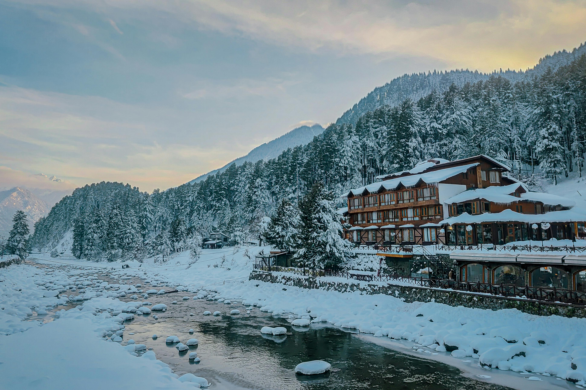
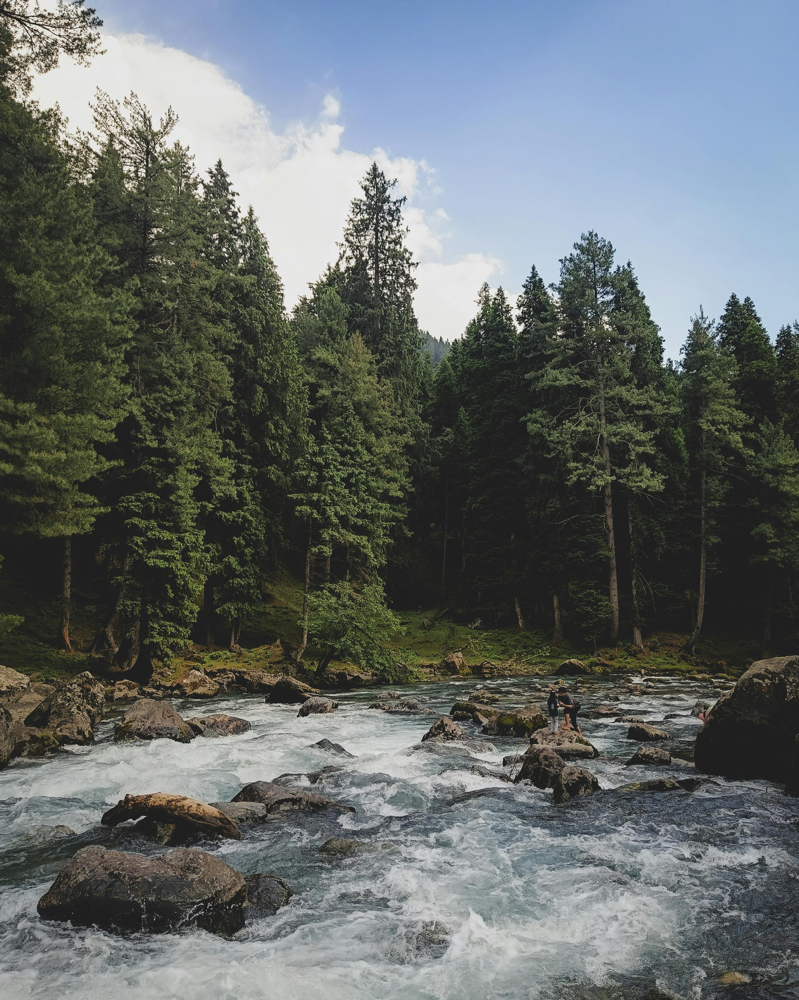
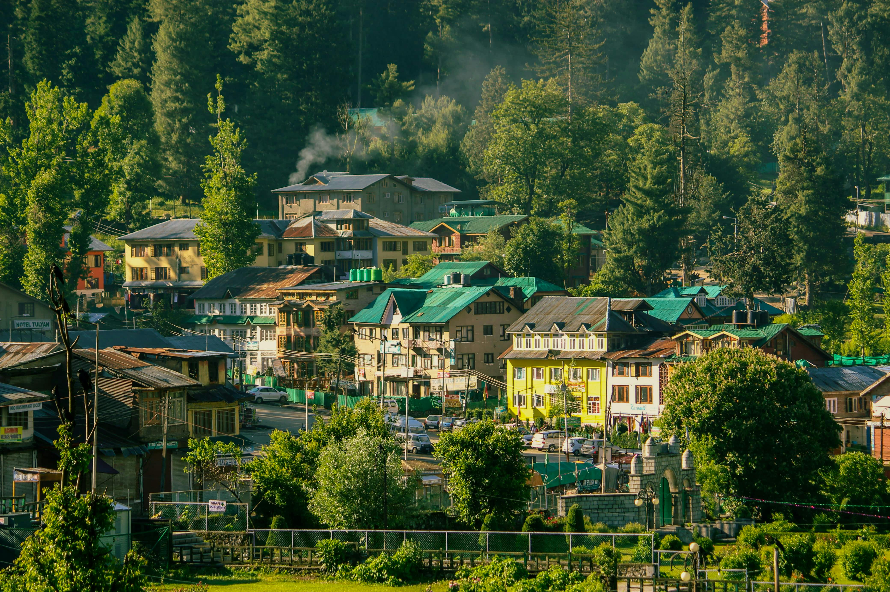
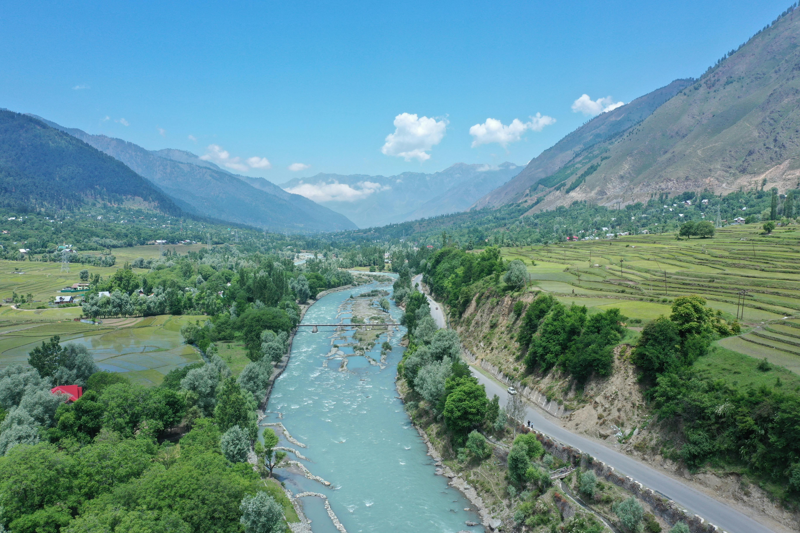

Photography
A Glimpse of Pahalgam
River valleys, pine-covered ridges, and meadows that have inspired poets, pilgrims, and filmmakers for generations.





A Breathtaking Retreat & Adventure Gateway — nestled at 2,740 meters along the Lidder River, the Valley of Shepherds where Bollywood met the Himalayas.
Perched at 2,740 meters in Jammu & Kashmir's Anantnag district, Pahalgam is a picturesque hill station nestled along the banks of the crystal-clear Lidder River. It is renowned for its adventure activities including hiking, trekking, and some of the finest trout fishing in all of India.
Pahalgam also serves as the starting point for the revered Amarnath Yatra — one of Hinduism's most sacred pilgrimages. Chandanwari, located 16.6 km away, acts as the official base camp for the yatra, drawing hundreds of thousands of pilgrims every year.
The Kolhoi Glacier trek, passing through the scenic Aru village, is among the most popular trekking routes in the region. Visitors can also experience sledging on frozen glaciers, while the Lidder River's long stretches offer ideal spots for trout fishing — a beloved activity among nature lovers.
Pahalgam holds a special place in Bollywood history — the iconic 1983 film Betaab, starring Sunny Deol and Amrita Singh, was filmed here, leading to the valley being named Betaab Valley in its honour. This cinematic legacy makes every visit feel like stepping into a timeless frame.
River valleys, pine-covered ridges, and meadows that have inspired poets, pilgrims, and filmmakers for generations.




Trekking, trout fishing, pilgrimage trails, and a Bollywood valley — Pahalgam is Kashmir's most layered and rewarding destination.
Named after the 1983 Bollywood classic, this stunning valley lined with pine forests and the rushing Lidder River is one of Pahalgam's most visited and photographed spots.
Known as the "Mini Switzerland of India," Baisaran is a vast green meadow accessible by pony or short trek — surrounded by dense pine forests and snow-capped peaks.
One of Kashmir's most popular multi-day treks, passing through the charming Aru village and the scenic Lidder Valley to the base of the Kolhoi Glacier.
Pahalgam is the traditional route's starting point for the sacred Amarnath Yatra. Chandanwari, 16.6 km away, serves as the official base camp for the pilgrimage.
The Lidder River is famous for its brown and rainbow trout. Fishing licenses are available locally, making it a beloved activity for anglers amid breathtaking mountain scenery.
Visit Chandanwari for snowfields that remain well into summer — a popular spot for sledging, snow walks, and experiencing the Amarnath Yatra starting point up close.
Pahalgam shines in every season, but spring through autumn offers the best access to all its adventures and valleys.
Lush green valleys, wildflowers along the Lidder, all trekking routes open, and the Amarnath Yatra in full swing (June–August). Temperatures a pleasant 10°C–22°C.
Golden chinar trees, crisp mountain air, and far fewer crowds. Betaab Valley and Baisaran are at their most peaceful and scenic. Ideal for photography.
Pahalgam is blanketed in snow, Chandanwari and Baisaran are especially magical. Sledging on the snowfields is a highlight. Some roads may be restricted.
Pahalgam pairs beautifully with these Kashmir destinations on any multi-day Kashmir itinerary.
Let us plan your perfect Pahalgam adventure — Betaab Valley, Baisaran, Kolhoi trek, and the Lidder River all in one seamless trip.